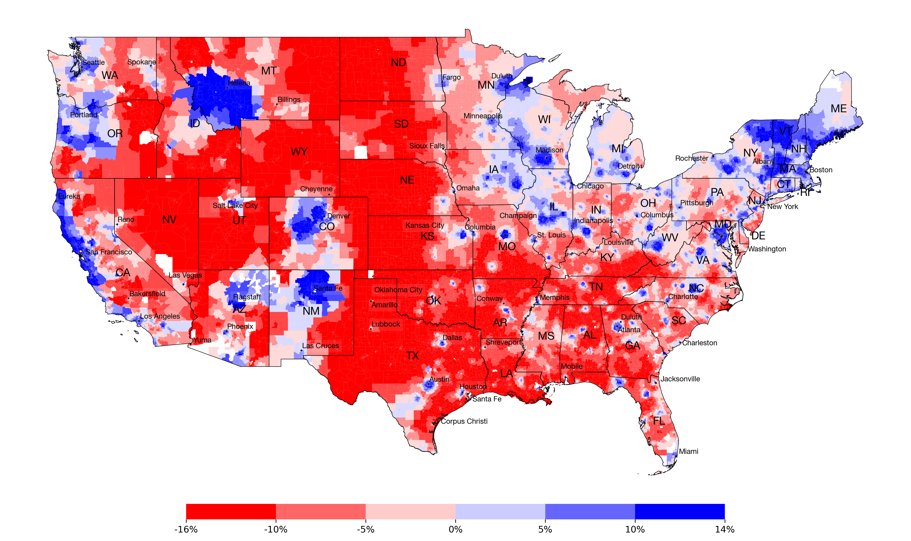

Visualizing Vote Contributions: County vs. Block Group
Contribution due to Context

Contribution due to Population Mix
`y_i \ = \ \bar{y}`
+
Contribution due to Context
`\alpha_i \sigma_y`
+
Contribution due to Population Mix
`\sigma_y \sum_{j} \beta_{ij} (x_{ij} - \bar{x}_j) / \sigma_{x_j}`
×